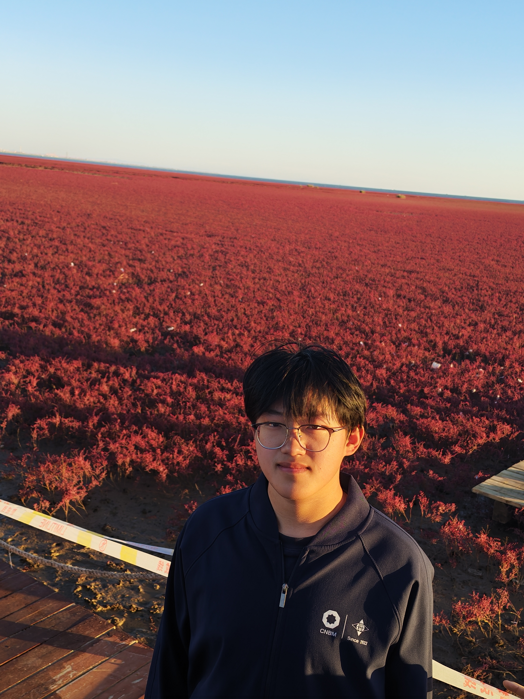

My name is Wang Siyu. I was born on 30 November 2008 in Shangrao, a city in the southeast of China's Jiangxi Province. I finished all of my schooling before university in Jiangxi, and I am now studying in Hebei, majoring in Hydropower Engineering at the School of Earthquake Engineering and Building Safety.
People usually describe me as cheerful, outgoing and humorous. I like a room where people are talking and laughing, and I try to be the one who keeps it that way.
When I am reading for myself, I lean towards history and military books. Alongside that I read a wide range of Japanese manga and watch a good deal of anime — one title I keep coming back to is Neon Genesis Evangelion.
Writing has stayed with me as well. It is the quiet counterpart of football: one is loud and fast, the other is slow, private, and a way of putting my thoughts in order.
Football is the part of my week I look forward to most. In my university team I play as a full-back and, depending on how the game is going, as a centre forward.
Full-back is my natural position: you defend the flank, then join the attack at the exact moment the ball turns — a job that asks for stamina, timing and a willingness to run the whole touchline.
My favourite player is Dani Alves, the Brazilian right-back. He is the reason I first paid attention to the position: a defender who plays like a playmaker, and who kept doing it at the top level for far longer than anyone expected.
I listen to a lot of music, mostly pop and R&B. For me music and travel are two of the genuinely essential things in a life — one changes your mood in three minutes, the other changes your sense of how large the world is.
Before I turned eighteen I had already been to a good number of places: Inner Mongolia, Liaoning, Hebei, Shandong, Anhui, Zhejiang and Jiangsu, as well as Shanghai and Beijing. The ones that stayed with me most are Shenyang, Qingdao, Shanghai and Beijing — the old industrial weight of the northeast, the sea air of the Shandong coast, and the sheer scale of the two biggest cities.
There is still a long list of places I want to see. For now: thank you for reading, and I hope you will like me.